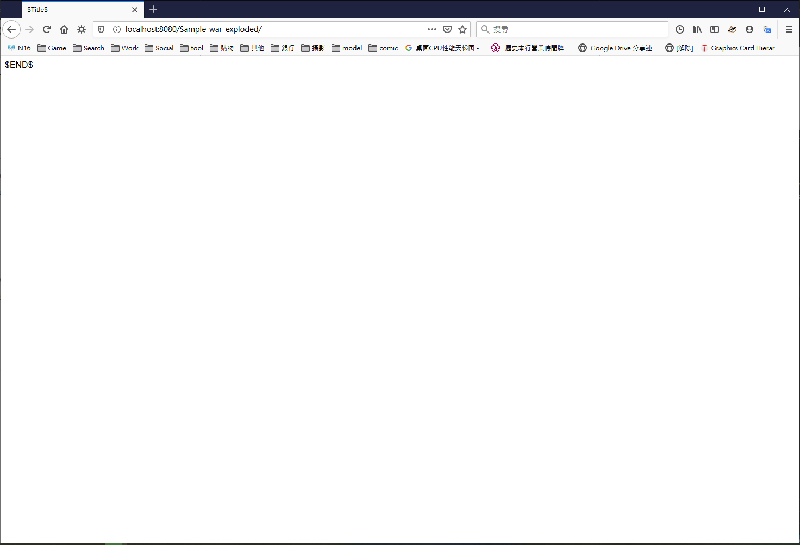

說明
下定決心，刷了一年份買付費版．
快捷鍵
快捷鍵 用途 ctrl + alt + L 快速排版 建立預設的Servlet&JSP專案(網頁)
建立
- File -> New -> Project

- File -> New -> Project
部屬
- Run -> Edit Configurations…
姑且說一下，從最上面的紅框是設定這個設定的名稱，舉例來說，在測試環境中可能會選擇tomcat Server進行部屬，但是最後部屬可能不會在本地，應該說大多得情況都不是在本地。所以根據不同情況有可能會有一堆部屬設定檔． 第二個紅框是設定tomcat程式的所在地．第三個是設定JRE環境．(有種講廢話的感覺)
- Run -> Edit Configurations…
啟動
- Run -> Run ‘Sample’

在這裡可能會出現一個問題，有些瀏覽器強制HTTPS連線，而現在的情況卻只能HTTP連線而已.
- Run -> Run ‘Sample’
HTTPS (SSL)
這裡只演示最小限度的設定，詳情請仔細對照環境再修改．
1. 準備憑證，使用JDK內附的keytool 公用程式．1
2# keytool -genkey -alias 憑證的名稱 -keyalg RSA -storepass keystore的密碼 -keystore 憑證的路徑及名稱(沒有名稱就是在該資料夾下建立) #
keytool -genkey -alias tomcat -keyalg RSA -storepass StorePassword -keystore localhost-rsa.jks
在這裡要注意我是把localhost-rsa.jks放在tomcat/conf/資料夾下
2. 編輯server.xml檔案，開啟HTTPS服務
3. 設定Port
這裡設定兩個地方，先將原本的http改成https，再來我這邊Chrome不認localhost來源的憑證，還好有127.0.0.1可以用，如果是firefox就可以用Localhost，不過要加入例外清單；第二個設定的地方是將8443port加入https上